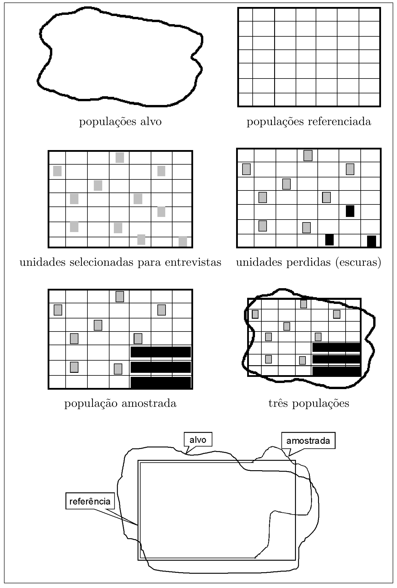

Menu · Bolfarine & Bussab · Capítulo 1 · págs. 1–36
O capítulo sem fórmulas — e o mais cobrado em questão discursiva. Vocabulário, decisões de projeto, e o argumento de por que uma amostra pode ser melhor que o censo.
Um passo por vez. Cada um termina com uma pergunta — responda antes de abrir.
Aqui quase não há conta. O que se cobra é vocabulário preciso e argumento. Por isso as checagens são de julgamento, não de cálculo.
Passo 1 de 12
Custo e prazo são o motivo óbvio. O motivo bom é outro: qualidade.
Menos unidades permitem mais cuidado em cada uma — e o erro que sobra costuma ser menor que o de um censo mal feito.
entrevistar 1 000 em vez de 200 000
resultado em semanas, não anos
entrevistador treinado, supervisão, revisita
às vezes medir destrói a unidade
Um censo tem erro amostral zero e erro não amostral alto: milhares de entrevistadores, pressa, controle fraco, não resposta.
Uma amostra tem erro amostral calculável e erro não amostral baixo. O erro total pode ser menor na amostra — e, ao contrário do censo, você sabe dizer de quanto ele é.
Quando o censo se justifica: população pequena, necessidade legal de contar todos, ou exigência de resultado para subdivisões muito finas (cada bairro, cada empresa).
Amostra, obrigatoriamente. Medir a vida útil queima a lâmpada — o censo destruiria a produção inteira.
É o caso em que amostrar não é escolha de custo: é a única forma de haver informação.
Passo 2 de 12
Entre a pergunta que interessa e o número que se calcula há três traduções. Cada uma pode errar.
E é aqui, antes de qualquer fórmula, que a pesquisa costuma se perder.
Objetivo: decidir se lançamos um produto popular na cidade.
Constructo: poder de compra das famílias.
Variável: renda familiar declarada, em reais.
Parâmetro: a renda média, .
Renda declarada representa bem poder de compra? Talvez não — e esse é um problema real, não estatístico.
Com = despesa com comida e = renda:
“que fração da renda do conjunto vai em comida”
“qual a fração média por família”
Números diferentes, perguntas diferentes. Escolher errado é erro de objetivo, não de conta.
Constructo: satisfação — um estado mental, não observável.
Variável: nota de 0 a 10 numa pergunta, ou taxa de recompra, ou número de reclamações. Três variáveis diferentes para o mesmo constructo, e elas não dão a mesma resposta.
Por isso a escolha tem de ser justificada no projeto, não escondida na metodologia.
Passo 3 de 12
Sobre quem se quer saber, o que é sorteado, e quem abre a porta. Podem ser três coisas distintas.
Quando a amostral não é a elementar, o plano já é de conglomerados ou de estágios — capítulos 7 e 8.
de quem se quer a informação — o domicílio
o que é sorteado — o quarteirão
quem responde — o morador que atende
Sorteio quarteirões num mapa (unidade amostral).
Quero dados de cada domicílio do quarteirão (unidade elementar).
Quem me atende é um morador adulto (unidade de resposta), que fala pelos outros.
Só quando há uma lista das próprias unidades elementares e se sorteia direto dela — e cada uma responde por si.
Exemplo: sortear alunos de uma lista de matrícula e entrevistar cada um.
É o caso da AAS do capítulo 3. Fora dele, quase nunca coincidem.
A aleatoriedade entra pela unidade amostral. Se você sorteia quarteirões, a probabilidade que você controla é a do quarteirão — não a do domicílio.
E domicílios do mesmo quarteirão se parecem entre si, o que reduz a informação trazida por cada um. É o que o capítulo 7 chama de correlação intraclasse.
Amostral: a escola. Elementar: o professor. De resposta: o próprio professor.
Amostral ≠ elementar e observam-se todos os elementos da unidade sorteada: isso é amostragem por conglomerados em um estágio, o capítulo 7.
Se em vez disso ela sorteasse alguns professores de cada escola, seria amostragem em dois estágios — capítulo 8.
Passo 4 de 12 · o passo mais cobrado do capítulo
A que você quer descrever, a que a sua lista descreve, e a que de fato podia ser sorteada.
A estatística só fala da última. Chegar da última à primeira é argumento, não probabilidade.
, e as diferenças são erros de cobertura.
A amostra veio da população amostrada: é só sobre ela que a inferência estatística vale. Estender à referida exige analisar o que se perdeu; estender à alvo exige argumento substantivo. Nenhum dos dois é conta.

Alvo: todos os adultos da cidade.
Referida: só quem tem telefone fixo cadastrado — já saem os que só têm celular, e esses não são um grupo aleatório (são mais jovens, mais urbanos).
Amostrada: dos cadastrados, só quem atende e aceita responder — saem os que trabalham fora o dia todo e os que desconfiam.
Se o resultado for “68% dos adultos aprovam”, a frase honesta é: “68% dos adultos com fixo cadastrado que atenderam e aceitaram responder”. O resto é extrapolação, e precisa ser defendida.
Passo 5 de 12
A mesma divisão da população, decidida em dois momentos diferentes — e com consequências diferentes.
Estrato é antes do sorteio. Subclasse é depois, na análise.
Divisão usada no sorteio.
Você separa o cadastro em Sul e Norte, e decide: 400 de cada.
é conhecido. é constante, fixado por você.
Precisão garantida em cada região.
Divisão descoberta na análise.
“E entre os aposentados da amostra?” — você não sabia quem era aposentado antes de perguntar.
O tamanho na amostra é aleatório: pode sair 30, pode sair 12.
Variância maior que a de um estrato do mesmo tamanho, porque também varia.
Há uma pressão forte para querer resultado separado para tudo: região × sexo × faixa etária × renda. Isso multiplica estratos e leva a tamanhos de amostra inviáveis.
A saída que o livro recomenda: os fatores básicos viram estratos; os secundários ficam como subclasses, analisados com a precisão que sobrar.
Região, porque você a conhece antes de sortear (está no cadastro, no mapa).
Faixa de renda você só descobre perguntando — então ela só pode ser subclasse, a menos que exista um cadastro prévio de renda, o que é raro.
É a regra prática: só pode ser estrato o que você já sabe antes de bater na porta.
Passo 6 de 12
Investigação por levantamento, experimento ou observação; coleta por entrevista, questionário, registro ou aparelho.
Cada combinação troca custo por controle.
| Método | A favor | Contra |
|---|---|---|
| entrevista pessoal | maior taxa de resposta; dá para esclarecer dúvida | caro, lento, viés do entrevistador |
| telefone | rápido e barato; supervisão fácil | cobertura ruim; questionário tem de ser curto |
| questionário autoaplicado | barato; sem viés de entrevistador; tema delicado | não resposta alta e seletiva |
| registro administrativo | custo quase zero; cobre todos | mede o que o registro mede, não o que você quer |
| aparelho (peoplemeter) | mede comportamento, não memória | caro; painel pode se comportar diferente por saber-se medido |
Duas escolhas de projeto que aparecem aqui e importam depois:
Questionário anônimo, quase certamente.
Na entrevista pessoal o viés de resposta é enorme — ninguém admite ao entrevistador. Você trocaria um erro que sabe medir (a não resposta maior do autoaplicado) por um que não sabe (a resposta falsa sistemática).
Passo 7 de 12
Não há como verificar se uma amostra “se parece” com a população — se você soubesse a população, não precisaria da amostra.
O que se controla é o processo, não o resultado.
Aquela em que toda amostra possível tem probabilidade conhecida de ser sorteada, e essa probabilidade é positiva para as unidades que interessam.
Só nessa condição existem viés, variância e intervalo de confiança. Fora dela, você tem um número sem medida de erro.
Jessen organiza isso cruzando dois critérios: há ou não mecanismo probabilístico na seleção; e o procedimento do amostrista é objetivo (protocolo inequívoco, que qualquer um repetiria igual) ou subjetivo.
| procedimento | seleção probabilística | seleção não probabilística |
|---|---|---|
| objetivo | amostras probabilísticas ex.: estratificada proporcional | amostras criteriosas ex.: a “cidade típica” |
| subjetivo | amostras quase-aleatórias ex.: amostragem por quotas | amostras intencionais ex.: júri de especialistas, voluntários |
Amostragem por quotas parece probabilística: o entrevistador tem de trazer 30 mulheres de 25 a 40 anos, e a amostra final bate com a população em sexo e idade.
Mas quem ele aborda dentro da quota é escolha dele — quem estava na rua, quem parecia acessível. Não há probabilidade conhecida, e não há erro calculável. A amostra “parece” a população nas variáveis controladas e pode ser muito enviesada em todas as outras.
Uma imprecisão que o livro assume de propósito: “amostra aleatória simples” e “plano aleatório simples” são usados como sinônimos. A rigor, a amostra é o resultado; o plano é o protocolo que a gera.
Não — e o tamanho não ajuda em nada. Quem responde enquete de site é voluntário: mais interessado, mais extremado, mais conectado.
Esse viés de seleção não diminui com o número de respostas. Com 50 000 você tem um número muito preciso da opinião de um grupo que você não sabe definir.
A de 1 000 traz margem de erro de cerca de 3 pontos — e você sabe sobre quem ela fala.
Passo 8 de 12
Todo plano probabilístico se descreve respondendo cinco perguntas de sim ou não.
combinações — e a AAS é a que responde “a primeira opção” em todas.
| critério | primeira opção | segunda opção | cap. |
|---|---|---|---|
| a. probabilidade de seleção | igual | distinta | 9 |
| b. unidade amostral | a própria unidade elementar | conglomerado | 7 |
| c. estratos | não estratificada | estratificada | 4 |
| d. estágios | um só | mais de um | 8 |
| e. seleção das unidades | aleatória | sistemática | 7.8 |
A leitura. Escolher a primeira opção nos cinco critérios dá a AAS — o capítulo 3. Cada capítulo seguinte troca uma das respostas e estuda o que muda.
É a segunda opção em quatro dos cinco critérios — e é, mais ou menos, como se faz uma pesquisa domiciliar de verdade. Por isso o livro leva nove capítulos para chegar lá.
Passo 9 de 12 · o mapa do livro inteiro
Cada plano existe para resolver um problema prático diferente — quase sempre uma limitação do sistema de referência ou do orçamento.
Ler esta lista agora faz os próximos capítulos parecerem inevitáveis em vez de arbitrários.
| plano | exige do sistema de referência | resolve | cap. |
|---|---|---|---|
| AAS (com e sem reposição) | lista completa das unidades elementares — um SR perfeito | o caso de referência; todo o resto se compara com ele | 3 |
| Estratificada | a lista, mais a que estrato cada unidade pertence | precisão; e resultado separado por parte da população | 4 |
| Razão e regressão | uma variável auxiliar conhecida na população | precisão, usando informação que você já tem | 5–6 |
| Conglomerados | só uma lista de grupos — não das unidades | viabilidade e custo de campo quando não há lista | 7 |
| Dois estágios | lista de grupos; a lista interna se faz depois | o conglomerado grande demais para observar inteiro | 8 |
| Sistemática | uma ordenação qualquer das unidades | simplicidade de execução no campo | 7.8 |
| PPT (probab. proporcional ao tamanho) | o tamanho de cada unidade, além da lista | unidades muito desiguais em tamanho | 9 |
Os planos se dividem em dois grupos por motivo:
Daí a assimetria: no capítulo 4 o EPA fica abaixo de 1, e no 7 ele costuma ficar acima.
AAS está fora: exige a lista completa, que não existe.
A saída é conglomerados ou dois estágios: sorteie trechos do mapa (que dá para delimitar), e dentro do trecho liste e sorteie os domicílios na hora.
É exatamente para isso que o capítulo 7 existe — não por elegância teórica, mas porque o SR perfeito quase nunca existe.
Passo 10 de 12
A precisão depende de quantos você entrevista — não de que fração da população eles são.
E melhora com : para cortar o erro pela metade, quadruplique a amostra.
Margem de erro de 95%: .
| margem | intervalo | |
|---|---|---|
| 100 | 9,7 p.p. | 46,3 % – 65,7 % |
| 400 | 4,9 p.p. | 51,1 % – 60,9 % |
| 1600 | 2,4 p.p. | 53,6 % – 58,4 % |
Duas leituras. Quadruplicar corta a margem pela metade, todas as vezes. E não aparece na conta: 1 600 entrevistas dão a mesma precisão numa cidade de 100 mil e num país de 200 milhões.
O livro imprime “53,5% a 59,5%” na última linha; é gralha — o intervalo correto é 53,6%–58,4%, centrado em 56.
Sem reposição existe um fator de correção , que faz a população pequena ser um pouco mais fácil.
Com e na casa dos milhões esse fator é praticamente 1, e desaparece. É por isso que a pergunta “mas eles entrevistaram só 2 000 pessoas num país inteiro?” tem resposta: sim, e está certo.
O capítulo 3 deduz esse fator; o 1 só antecipa a consequência.
Quatro vezes o tamanho da amostra — e, grosso modo, quatro vezes o custo de campo.
É a razão de quase toda pesquisa eleitoral parar entre 2 e 3 pontos: abaixo disso o preço cresce depressa demais para o ganho de informação.
Passo 11 de 12
O erro amostral é o único que a teoria mede — e costuma ser o menor dos problemas.
Os outros não diminuem com . Nenhum deles.
| erro | o que é | o que atenua |
|---|---|---|
| cobertura | o SR não corresponde à população alvo | melhorar ou combinar cadastros; declarar a limitação |
| não resposta | a unidade sorteada não responde — e quem não responde é diferente | revisita, substituição controlada, ponderação por pós-estrato |
| resposta incorreta | o informante não sabe, não lembra ou não quer dizer | redação da pergunta, pré-teste, método de coleta adequado |
| processamento | digitação, codificação, programação | dupla digitação, críticas automáticas |
| entrevistador | induz a resposta, ou inventa | treino, supervisão, reentrevista de controle |
Porque ela é seletiva, não aleatória. Quem não atende trabalha fora; quem recusa desconfia; quem não devolve o questionário não se interessa pelo tema.
Aumentar não corrige nada: você só ganha mais respostas do mesmo tipo de pessoa. O que corrige é ir buscar quem faltou.
A primeira, sem hesitar.
A segunda tem margem de erro amostral menor — e um viés de não resposta que pode ser de dez pontos e que ninguém consegue medir. Você teria um número muito preciso, e possivelmente muito errado.
É a lição do capítulo: o erro que você mede não é o erro que você tem.
Passo 12 de 12
Uma estimativa sem o plano que a gerou não é informação — é um número solto.
A ficha técnica é o que permite a outra pessoa julgar o seu resultado.
a pergunta, e para que decisão
alvo, referida, amostrada — e as perdas
qual, estratos, alocação,
método, período, taxa de resposta
com erro padrão ou IC, nunca sozinhas
o que o número não diz
E o banco de dados junto: microdados com os pesos do plano, dicionário das variáveis, e o código de quem eram as unidades perdidas. Sem os pesos, ninguém consegue refazer a análise corretamente.
Sobre qual população vale a conclusão. Não “os brasileiros aprovam”, mas “entre os adultos urbanos das capitais, entrevistados em domicílio entre 3 e 7 de março, com 12% de perda”.
É chato de escrever e é o que separa um relatório de uma manchete.
Quase tudo: qual população, que plano, que , que margem de erro, que taxa de resposta, como a pergunta foi redigida e quando.
Sem margem de erro, 62% pode ser 62 ± 2 ou 62 ± 15. Sem a redação da pergunta, pode ser outra pergunta.
Papel, aba fechada, tudo o que lembrar — não passo por passo. Sai menos na hora e mais dois dias depois, e mais organizado.
Este capítulo cai em questão discursiva, então escrever em frases completas é o próprio treino da prova.
Volte ao passo e refaça só a checagem, sem reler.
Os itens 4 e 7 são os que mais caem: saber dizer sobre qual população vale a conclusão, e por que “representativa” não é um critério verificável.
Depois do fecho · seis exercícios de discussão, com resposta comentada
Os exercícios do capítulo são de discussão: pedem que se aplique o vocabulário a situações concretas. Escolhi seis, cada um exercitando uma ideia: contar as palavras deste livro (1.2 — dá para conferir com um censo!), três maneiras de estimar uma proporção e o viés de tamanho (1.3), a “amostra da letra S” e o sorteio sistemático (1.6), escolha da UPA (1.10), carros ou estacionamentos (1.12) e método de coleta (1.13). As respostas são minhas; o livro não traz gabarito para este capítulo.
Desenhe um plano amostral, ressaltando os pontos discutidos neste capítulo, para responder: “deseja-se conhecer o número total de palavras existente no livro-texto Bolfarine e Bussab”.
Objetivo e parâmetro. O parâmetro é um total, . É preciso operacionalizar “palavra” (conta-se “AASc”? “2,5”? o cabeçalho de página?) — decido: sequência de caracteres separada por espaço que contenha ao menos uma letra, incluindo cabeçalhos e legendas. Unidade elementar: a palavra. População alvo: as palavras do livro. Não há lista de palavras, logo o sistema de referência tem de ser outro: a lista de páginas numeradas, 1 a 269 — cada página é um conglomerado de palavras, com tamanho conhecido só depois de contar. População referida: as palavras das páginas 1–269 (ficam de fora capa, sumário e listas, que estão em romanos — diferença alvo × referida, a declarar). Unidade amostral: a página (UPA); se as páginas fossem longas demais, um segundo estágio sortearia linhas (USA). Unidade de resposta: quem conta — o instrumento é a contagem direta, sem erro de resposta, mas com erro de mensuração (critério de “palavra”) e de digitação.
Plano. As páginas variam muito (capa de capítulo, tabelas, exercícios, páginas em branco no fim de capítulo), então há dois caminhos: estratificar por tipo de página (exige classificar as 269 antes) ou usar o sorteio sistemático, que espalha a amostra pelo livro inteiro e captura a mistura de tipos sem classificar nada — é o caminho que sigo. Sorteia-se um início entre 1 e 10 e tomam-se as páginas de 10 em 10: páginas (10% do livro). Estimador: , com ; o erro padrão, tratando a amostra como AASs (aproximação usual para o sistemático — seção 7.8), sai da fórmula do capítulo 3, .
Uma realização. Início sorteado 7 → páginas 7, 17, …, 267. Contei as palavras de cada uma (com o critério acima, aplicado ao texto do PDF):
y <- c(402, 261, 349, 208, 250, 185, 206, 174, 334, 193, 205, 290, 242, 232,
179, 194, 202, 191, 166, 212, 215, 200, 219, 161, 132, 281, 30)
N <- 269; n <- length(y)
N * mean(y)
## [1] 58911
ep <- N * sqrt(var(y) / n * (1 - n / N)); round(ep)
## [1] 3518
round(N * mean(y) + c(-1, 1) * 1.96 * ep)
## [1] 52016 65806
Estimativa: cerca de 59 mil palavras, com erro padrão de 3,5 mil (6%). Repare no 30 da última página sorteada (p. 267, quase em branco) e no 402 da primeira: é a heterogeneidade das páginas que infla ; estratificar por tipo reduziria o erro. Censo (aqui é barato — o PDF conta sozinho): 58 500 palavras nas 269 páginas. O erro amostral desta realização foi de 411 palavras, 0,7%. Note o que o capítulo ensina: o censo foi possível porque a “coleta” custa nada; se cada página tivesse de ser contada à mão, a amostra de 27 páginas seria a escolha razoável — e o bom senso do livro (“se a precisão pede mais da metade da população, faça o censo”) se aplicaria ao contrário.
Quer-se a proporção de crianças do sexo masculino, com menos de 15 anos, moradoras de uma cidade. Três procedimentos: (a) para cada menino de uma amostra de meninos (retirada da população de meninos menores de 15), pede-se quantos irmãos e irmãs ele tem; (b) toma-se uma amostra de famílias e pergunta-se o número de meninos e meninas menores de 15; (c) procuram-se casualmente crianças e, além do sexo do entrevistado, pergunta-se o número de irmãos e irmãs na faixa etária. Analise, justifique, diga qual usaria ou proponha outro.
O parâmetro é uma razão de totais: , e a unidade elementar é a criança. A pergunta de fundo é: qual é a unidade amostral e com que probabilidade cada família entra?
(a) A unidade amostral é o menino. Uma família com meninos tem chances de ser alcançada; famílias sem meninos nunca aparecem (erro de omissão do sistema de referência: a população referida é “famílias com ao menos um menino”). Somar “ele + irmãos” sobre a amostra e dividir pelo total de crianças superestima duas vezes: pelas famílias só de meninas ausentes e pelo peso proporcional ao número de meninos. É o viés de tamanho — o mesmo que faz “tamanho médio da turma” dar maior quando se pergunta a alunos do que quando se pergunta a escolas. Corrigir exigiria ponderar cada família por , e mesmo assim as famílias sem meninos ficariam de fora. Além disso, precisa-se de uma lista de meninos, que não existe.
(b) A unidade amostral é a família (conglomerado de crianças), sorteada com igual probabilidade de uma lista de famílias/domicílios — que existe (setores censitários, cadastros). Toda família tem a mesma chance, inclusive as sem filhos (contribuem 0/0 e apenas gastam entrevista) e as só de meninas. O estimador natural é a razão sobre as famílias da amostra — o estimador razão do capítulo 5, ligeiramente viesado mas consistente. É o procedimento correto.
(c) “Casualmente” = não probabilístico: as crianças encontradas na rua ou na porta da escola não são um sorteio, e o perfil (idade, sexo, horário, bairro) é o que o entrevistador alcançou — amostra intencional/criteriosa na tipologia de Jessen, sem teoria para o erro. Se as crianças fossem sorteadas com igual probabilidade da população de crianças, então o sexo da própria criança já seria um indicador não viesado de , e os irmãos seriam informação redundante (a família entraria com probabilidade proporcional ao número de crianças; somar irmãos repetiria o viés de tamanho de (a), agora sobre o total de crianças, que se cancela na razão, mas não vale a pena).
Escolha: (b), com as famílias sorteadas de um SR de domicílios (em dois estágios se a cidade for grande: setores censitários, depois domicílios), e estimador razão. Se o custo por família for alto, use os registros de nascimento dos últimos 15 anos como SR alternativo — mas atenção à migração (população referida ≠ alvo).
Uma rede bancária tem cerca de 20 mil funcionários especializados, removidos com frequência entre filiais. Quer-se uma amostra de 10% para uma pesquisa contínua nos próximos anos. Sortear 2 mil indivíduos seria caro (identificação). Propôs-se sortear uma letra (digamos S) e incluir todos os funcionários com sobrenome iniciado por ela — as fichas estão em ordem alfabética. Críticas? Sugira um plano “melhor”, ainda baseado na ordem alfabética.
Críticas. O plano é uma amostragem por conglomerados com um único conglomerado sorteado: as 26 letras são conglomerados de tamanhos muito desiguais (em português, S concentra Silva, Santos, Souza, Soares — talvez 15% ou mais dos sobrenomes — enquanto K, W e Y têm quase nada). Consequências: (i) o tamanho da amostra não é controlado — pode dar 3 mil ou 200, conforme a letra; (ii) com um só conglomerado não há como estimar a variância a partir da própria amostra; (iii) a inicial do sobrenome está associada à origem étnica e regional (sobrenomes italianos, japoneses, alemães se concentram em letras), o que pode se correlacionar com filial, cargo e progresso na carreira — a amostra da letra S não é uma “micro representação” e não há como saber quanto difere; (iv) como as remoções não mudam o sobrenome, a identificação ao longo dos anos é de fato fácil — essa é a única vantagem real do plano, e vale a pena preservá-la.
Plano melhor. Use a ordem alfabética como lista, não como estrato: sorteio sistemático com intervalo 10 — sorteie um início entre 1 e 10 e tome a 10ª ficha a partir dele, e daí de 10 em 10. Isso fixa , espalha a amostra por todas as letras (e portanto por todas as origens de sobrenome), continua sendo trivial de identificar no arquivo (marca-se a ficha) e reproduz-se em cada ano com a lista atualizada. Melhor ainda: trate cada letra como estrato e faça o sistemático dentro de cada uma — garante os 10% por letra. Para a pesquisa contínua, o problema restante é a rotatividade: funcionários que saem e entram; o plano precisa de regra de substituição (novos admitidos entram na amostra pela mesma regra de 1 em 10 na ordem em que são arquivados).
Um pesquisador quer estimar o consumo médio de água por domicílio numa cidade. Discuta vantagens e desvantagens das UPAs: (a) unidade domiciliar; (b) blocos de domicílios (casa, prédio de apartamentos, vilas); (c) quarteirões.
Primeiro a pergunta que o capítulo ensina a fazer: que sistema de referência existe? Consumo de água é medido por hidrômetro, e a companhia de saneamento tem o cadastro das unidades consumidoras — se esse cadastro estiver disponível, ele é um SR quase perfeito para (a), e a “coleta” vira leitura de registro. Se não estiver (ou se o objetivo inclui domicílios sem ligação, poços, ligações clandestinas), a coleta é de campo e as três UPAs se comparam assim:
Recomendação: com o cadastro da companhia, (a). Sem ele, dois estágios com quarteirão como UPA (sorteado com probabilidade proporcional ao número de domicílios do censo) e domicílios como USA, estratificando os quarteirões por região/renda — é o que reduz a correlação intraclasse e controla o custo.
Um especialista em trânsito quer estimar a proporção de carros com pneus carecas na cidade de Pepira. Pode sortear carros, ou grupos de carros em estacionamentos ou na rua. Vantagens de um e de outro? Qual usaria?
As populações. Alvo: os carros que circulam em Pepira. Um SR de carros individuais existe — o registro do DETRAN — mas inclui carros sucateados, vendidos para outra cidade, parados na garagem (erros de comissão), exclui os de fora que circulam ali (omissão), e sobretudo não permite chegar ao carro para olhar o pneu sem visitar o endereço do dono. Já os “grupos de carros” — estacionamentos e trechos de rua — são conglomerados naturais da população que interessa (carros em uso), com um SR fácil (lista de estacionamentos, mapa de vias) e inspeção barata: o inspetor olha 50 carros numa hora.
Sortear carros (do registro). Vantagem: AAS pura, cada carro com igual probabilidade, variância fácil. Desvantagens: a inspeção domiciliar é caríssima, o dono avisado pode trocar o pneu (efeito de mensuração), e a população referida (registrados) não é a alvo (circulantes).
Sortear grupos. Vantagem: custo baixíssimo por carro e população certa. Desvantagens: (i) o estacionamento é um conglomerado homogêneo — shopping, hospital, fábrica, feira atraem frotas de perfil diferente (renda, idade do carro) — logo a proporção varia muito entre grupos e pouco dentro, e precisa-se de muitos grupos, poucos carros em cada; (ii) o tamanho do grupo varia e muda com a hora — a estimativa deve ser uma razão (carros carecas / carros inspecionados); (iii) carros em estacionamento pago tendem a ser mais novos; carros na rua à noite são os que dormem na rua. É preciso estratificar por tipo de local e horário e sortear os grupos com probabilidade proporcional ao movimento.
Escolha: grupos, em dois estágios — sorteio de locais (estratificados: estacionamentos comerciais, de trabalho, vias públicas de bairros de renda distinta; e por período do dia) e, dentro de cada local, sorteio sistemático de carros (1 em cada vagas). Um mesmo carro pode aparecer em dois locais (probabilidade desigual de inclusão), o que se declara como limitação. A alternativa “carros do DETRAN” só valeria se a inspeção fosse obrigatória e centralizada (vistoria), e aí a amostra seria de vistorias.
Discuta os méritos de cada método de coleta para: (a) um diretor de marketing de uma rede de TV quer a proporção de pessoas do país assistindo a determinado programa; (b) um editor quer a opinião dos leitores sobre os tipos de notícia do seu jornal; (c) um departamento de saúde quer o número de cachorros vacinados contra a raiva no ano passado.
O critério, sempre: que SR cada método pressupõe, que população amostrada ele produz, e quanto custa. Correio e internet têm resposta baixa e autosselecionada; telefone alcança só quem tem telefone (e atende); entrevista pessoal alcança todos, ao maior custo.
Sobre esta versão. Mesmo conteúdo do capítulo 1 de Bolfarine & Bussab (págs. 1–36), reorganizado em doze passos curtos, cada um com o caso concreto antes da abstração e uma pergunta de recuperação no fim. As figuras 1.1 (recortada do livro), 1.2 e 1.3 (redesenhadas em SVG) foram mantidas. O exemplo eleitoral da pág. 21 sai impresso com o intervalo “53,5% a 59,5%” para ; o correto, centrado em 56%, é 53,6%–58,4%. Os exercícios do capítulo são de discussão e o livro não traz gabarito — as respostas são minhas.